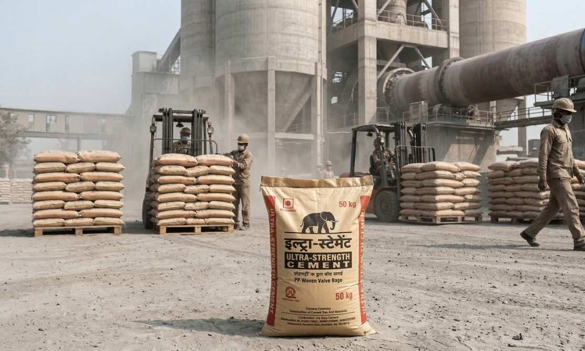

Cement & Construction Industry Packaging
Industrial grade polypropylene valve bags and woven polybags designed for cement plants, dry mix manufacturers, gypsum suppliers and construction material companies. Engineered for automated filling machines and heavy load transportation across India.
Bag TypesValve Bags, Open Mouth Bags
Capacity50 KG Standard
GSM Range100 GSM – 160 GSM
Filling TypeAuto Machine Compatible
Inner LinerPE Liner Available
SupplyPan India